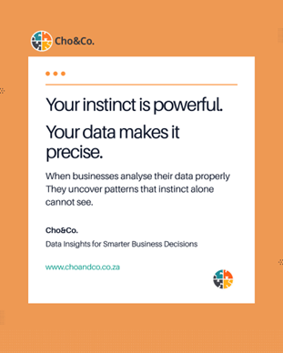
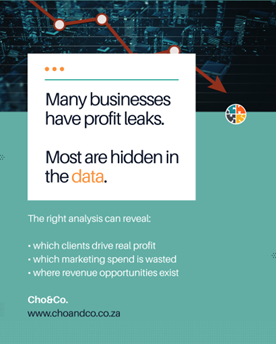
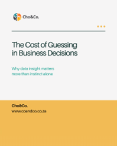

Cho&Co Insights
Practical perspectives on turning business data into better decisions. Follow us on LinkedIn for weekly insights.
March 2026
Having data and understanding it are two very different things
March 2026
Having data and understanding it are two very different things
Many organisations collect large amounts of data every day. But having data and understanding it are two very different things. Cho&Co was created to help businesses turn complex data into clear insights that support better decisions.
Read on LinkedIn
Why instinct alone isn't enough to run a modern business
March 2026
Why instinct alone isn't enough to run a modern business
Many SME founders rely on instinct — and instinct is valuable. But instinct becomes far more powerful when supported by clear data. "I feel like our marketing isn't working." Very often, the answers are already inside the business data. The challenge is that most organisations collect information without analysing it in a way that reveals what is really happening.
Read on LinkedIn
The hidden profit leaks most growing businesses don't know they have
March 2026
The hidden profit leaks most growing businesses don't know they have
Many growing businesses unknowingly have profit leaks — not because they are poorly run, but because the patterns are hidden inside their data. Smaller clients may generate higher margins. Marketing spend may create visibility but not revenue.
Read on LinkedIn
The cost of guessing: why assumption-based decisions are holding your business back
March 2026
The cost of guessing: why assumption-based decisions are holding your business back
One of the most expensive habits in business is guessing. Every decision based on assumptions carries a hidden cost — wasted spend, missed opportunities, delayed growth. When businesses analyse their data, leaders stop guessing and start seeing patterns.
Read on LinkedInIf your business is sitting on data but struggling to translate it into clear insight, that's exactly what we do.